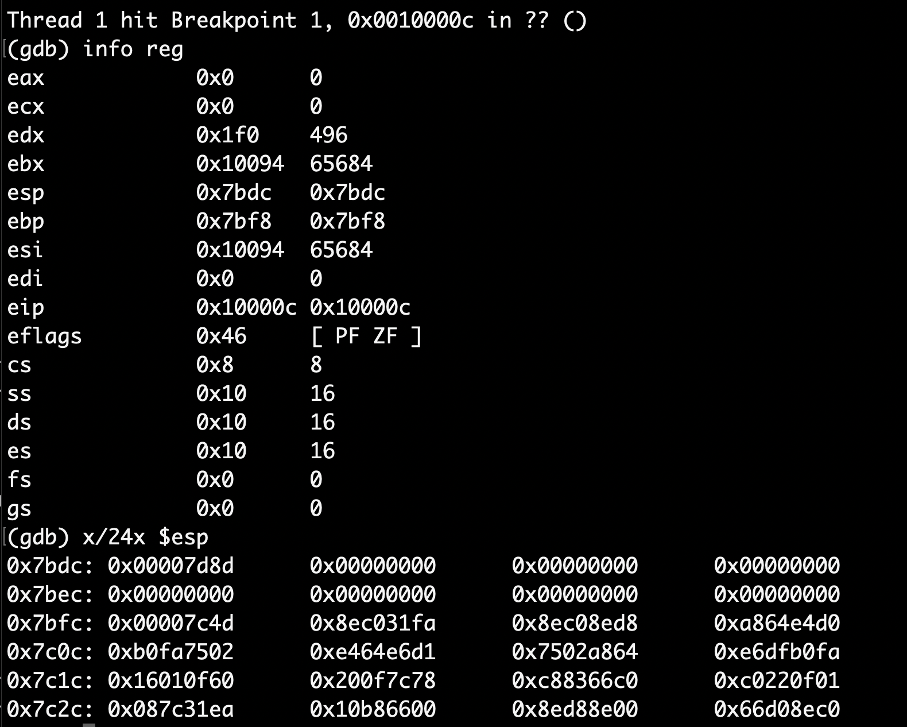

首先使用nm命令寻找内核的入口点：
在这里，内核的入口点是0x10000c。在lab1中，其实也看到了，jos的内核入口点也是0x10000c，这并不奇怪，因为jos也是基于xv6开发的。
在内核入口点处设置断点，并查看此处的寄存器信息和栈中的内容：

下P面对栈中对内容进行分析。
0x10000c是内核的入口点，如果想要弄清楚这时栈中的内容的含义，那么自然要分析之前的代码都干了什么，也就是bootloader的内容。
那么，回到最初的位置，在bootblock.asm的初始化%esp之后，调用bootmain之前设置断点,并查看相同地方的内容（0x7bdc）：
当前，esp指向的是0x7c00，可以看到自它以下（栈从高地址向低地址增长）的内容全为0。
在call bootmain之后，再次查看相同地方的内容：
可以看到0x7bfc处的内容被写入了“0x7c4d”，也就是call 7d3b <bootmain> 之后下一条语句的地址。
在进入了bootmain之后，进行了修改ebp，保存寄存器现场，分配局部变量等一系列栈操作：
在进入bootmain时打一个断点：

在0x7d50处：
可以看到，从0x7bd4处开始的内容，正是压入栈的那三个局部变量，而再往后就是进入bootmain后保存的寄存器环境。
之后，bootmain会通过一系列循环来把内核从磁盘加载进内存中，一步步分析这部分是毫无意义的，只需要关注于最后的结果。
再回过头来看之前的结果，
0x7bdc处之前是0x00000000，而现在变成了call *0x10018指令的下一条指令的地址，这是栈分配的局部变量使用完毕，分配的栈空间被回收，然后，call指令执行后压栈返回地址的结果。其余的内容刚才也已经分析完毕。